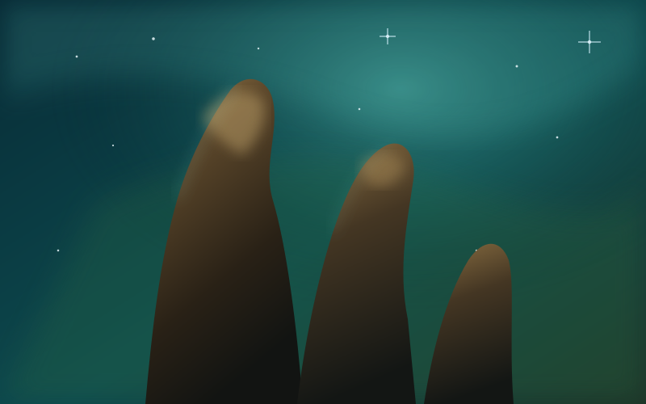
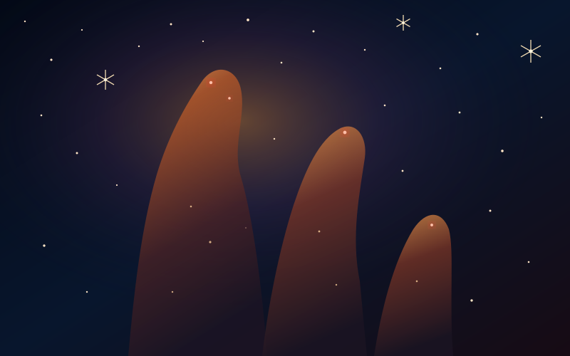

Hubble Space Telescope (Visible / UV)
2.4 m Mirror • LEO

Compare identical regions of deep space captured by the Hubble Space Telescope in ultraviolet and visible light against the James Webb Space Telescope (JWST) in infrared wavelengths that pierce cosmic dust.


Calculate when photons from a cosmic target left their source and how much more light JWST's 6.5 m gold-coated mirror collects compared to Hubble's 2.4 m mirror.
Propose a celestial region for dual Hubble/JWST archival imaging in Stellarium's next exhibition rotation. All fields validate live as you type.